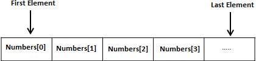

Arrays
A programming language provides a data structure called the array, which can store a fixed-size sequential collection of elements of the same type. An array is used to store a collection of data, but it is often more useful to think of an array as a collection of variables of the same type.
Instead of declaring individual variables, such as number0, number1, ..., and number99, you declare one array variable such as numbers and use numbers[0], numbers[1], and ..., numbers[99] to represent individual variables. A specific element in an array is accessed by an index
All arrays consist of contiguous memory locations. The lowest address corresponds to the first element and the highest address to the last element.
To declare an array in C, a programmer specifies the type of the elements and the number of elements required by an array as follows:
type arrayName [ arraySize ];
You can initialize array in C either one by one or using a single statement as follows:
double balance[5] = {1000.0, 2.0, 3.4, 17.0, 50.0};
If you omit the size of the array, an array just big enough to hold the initialization is created. Therefore, if you write:
double balance[] = {1000.0, 2.0, 3.4, 17.0, 50.0};
You will create exactly the same array as you did in the previous example.
balance[4] = 50.0;The above statement assigns element number 5th in the array a value of 50.0. Array with 4th index will be 5th i.e. last element because all arrays have 0 as the index of their first element which is also called base index. Following is the pictorial representation of the same array we discussed above:
An element is accessed by indexing the array name. This is done by placing the index of the element within square brackets after the name of the array. For example:
double salary = balance[9];The above statement will take 10th element from the array and assign the value to salary variable.
C programming language allows multidimensional arrays. Here is the general form of a multidimensional array declaration:
type name[size1][size2]...[sizeN];
int threedim[5][10][4];
int a[3][4] = {0,1,2,3,4,5,6,7,8,9,10,11};
The simplest form of the multidimensional array is the two-dimensional array. A two- dimensional array is, in essence, a list of one-dimensional arrays. To declare a two- dimensional integer array of size x, y you would write something as follows:
type arrayName [ x ][ y ];Where type can be any valid C data type and arrayName will be a valid C identifier. A two- dimensional array can be think as a table which will have x number of rows and y number of columns. A 2-dimentional array a, which contains three rows and four columns can be shown as below:
Multidimensional arrays may be initialized by specifying bracketed values for each row. Following is an array with 3 rows and each row has 4 columns.
int a[3][4] = {
{0, 1, 2, 3} , /*initializers for row indexed by 0 */
{4, 5, 6, 7} , /*initializers for row indexed by 1 */
{8, 9, 10, 11} /*initializers for row indexed by 2 */
};
An element in 2-dimensional array is accessed by using the subscripts, i.e., row index and column index of the array. For example:
#include &Ltstdio.h>
int main ()
{
/* an array with 5 rows and 2 columns*/
int a[5][2] = { {0,0}, {1,2}, {2,4}, {3,6},{4,8}};
int i, j;
/* output each array element's value */
for ( i = 0; i < 5; i++ )
{
for ( j = 0; j < 2; j++ )
{
printf( "a[%d][%d] = %d\n" , i,j, a[i][j] );
}
}
return 0;
}
The string in C programming language is actually a one-dimensional array of characters which is terminated by a null character '\0'. Thus a null-terminated string contains the characters that comprise the string followed by a null.
The following declaration and initialization create a string consisting of the word "Hello". To hold the null character at the end of the array, the size of the character array containing the string is one more than the number of characters in the word "Hello".
char greeting[6] = {'H', 'e', 'l', 'l', 'o', '\0'};
If you follow the rule of array initialization then you can write the above statement as follows:
char greeting[] = "Hello";
Following is the memory presentation of above-defined string in C/C++:
Actually, you do not place the null character at the end of a string constant. The C compiler automatically places the '\0' at the end of the string when it initializes the array. Let us try to print above mentioned string:
#include <stdio.h>
int main ()
{
char greeting[6] = {'H', 'e', 'l', 'l', 'o', '\0'};
printf("Greeting message: %s\n", greeting );
return 0;
}
Ouyput
Greeting message: Hello
C supports a wide range of functions that manipulate null-terminated strings:
| Function | Purpose |
|---|---|
| strcpy(s1,s2); | Copies string s2 into string s1. |
| strcat(s1,s2); | Concatenates string s2 onto the end of string s1. |
| strlen(s1); | Returns the length of string s1. |
| strcmp(s1,s2); | Returns 0 if s1 and s2 are the same; less than 0 if s1<s2; greater than 0 if s1>s2. |
| strchr(s1,ch); | Returns a pointer to the first occurrence of character ch in string s1. |
| strstr(s1,s2); | Returns a pointer to the first occurrence of string s2 in string s1. |
You can find a complete list of C string related functions in C Standard Library.